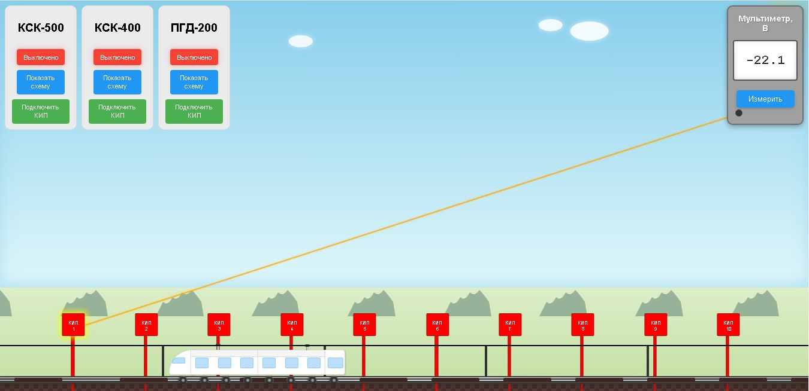
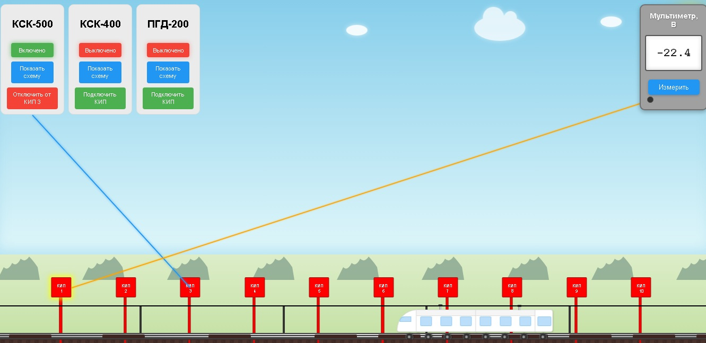
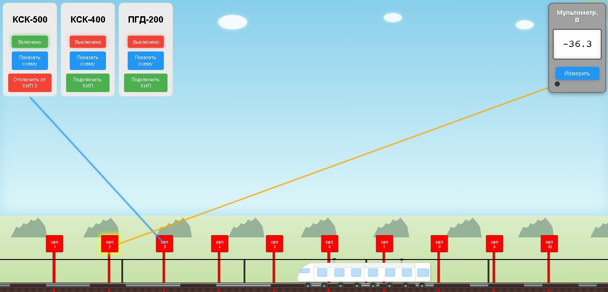

Инструкция по выполнению практической работы
Подготовка к работе
Изучите теоретический материал в разделе "Теория".
Откройте раздел "Практика".
Изучение схем защиты
На верхней панели расположены блоки: КСК-500, КСК-400, ПГД-200
Нажмите кнопку "Показать схему" на каждом блоке, чтобы ознакомиться с принципом работы устройств.
Проведение измерений
1. Измерения до защиты
Подключите мультиметр к каждому КИПу (1–10):
- Нажмите кнопку "КИП X" на красном столбике — появится провод к мультиметру.
- Нажмите "Измерить" на мультиметре.
- Запишите значение в Таблицу 1 (раздел "Отчет"), строка "До защиты".

2. Измерения с защитой
Для каждой схемы (КСК-500, КСК-400, ПГД-200):
1. Включите схему:
- Нажмите кнопку "Выключено" на блоке (станет "Включено").
2. Подключите схему к правильному КИПу:
- Нажмите "Подключить КИП" на блоке схемы.
- Выберите правильный КИП (Подсказка: при выборе правильного КИПа, график полученных значений будет иметь схожий вид с графиком из раздела "Теория").
3.При подключенной схеме измерьте значение каждого КИПа (1–10) и запишите данные в Таблицу 1 в соответствующие строки.

Подключаем схему КСК-500 к КИПУ 3

Значения КИП 1, КИП 2, КИП 3...КИП 10 записываем в таблицу 1
Важно!
Для корректных результатов подключите схемы к правильному КИПу.
Если мультиметр показывает "Err", проверьте подключение провода к КИПу.
Построение графика
Перейдите в раздел "Отчет". На основе данных Таблицы 1 постройте график.
Прохождение теста
Откройте раздел "Тест". Ответьте на вопросы, используя полученные данные.
Вернуться на главную